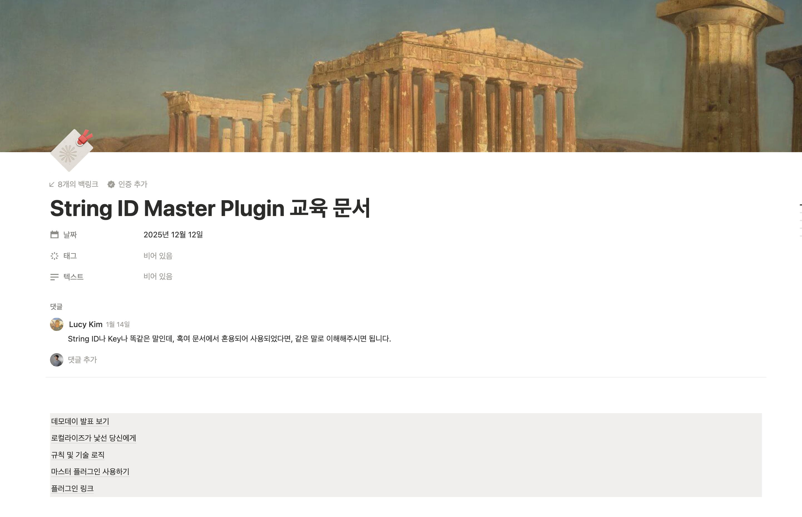
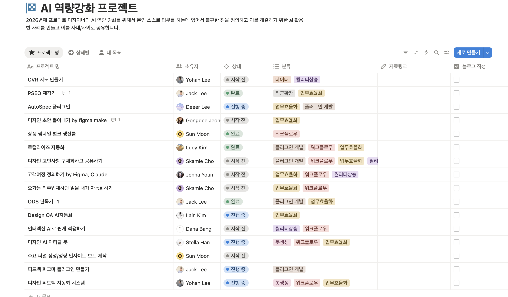
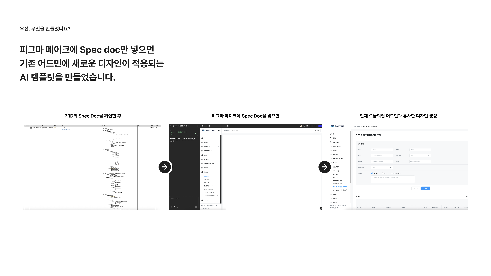
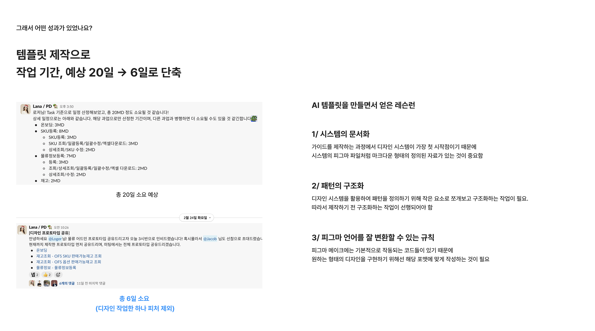
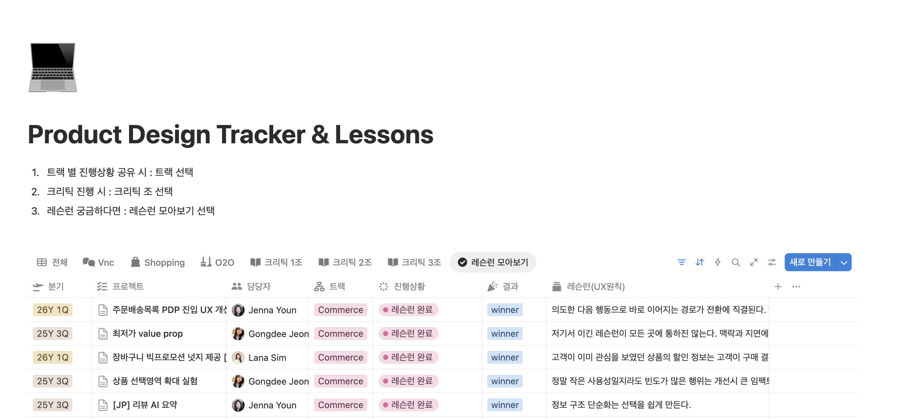
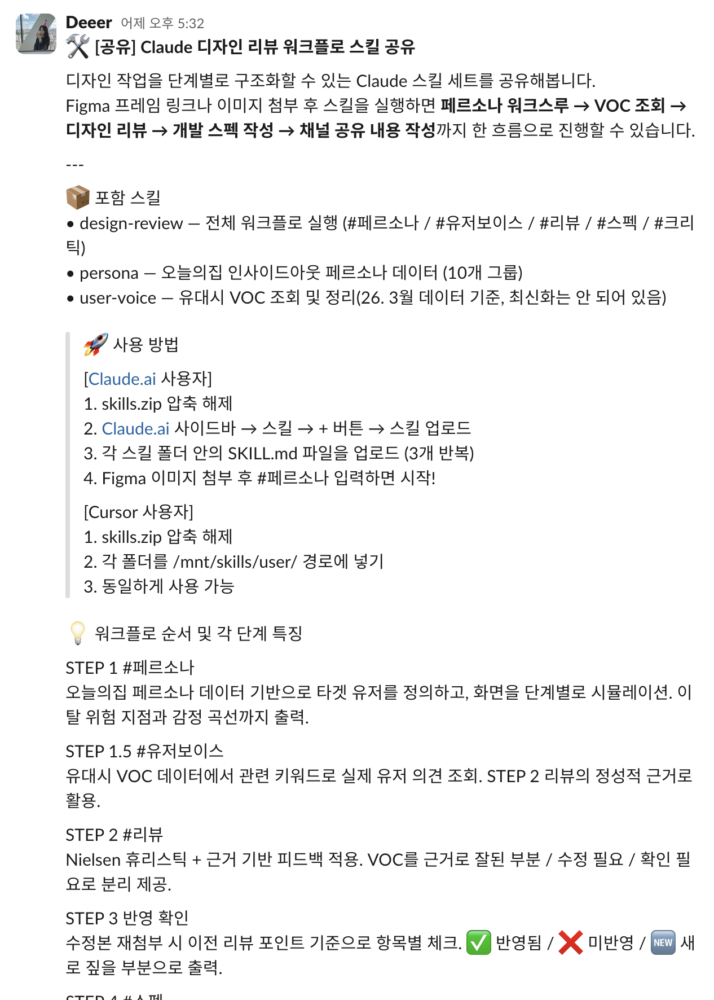
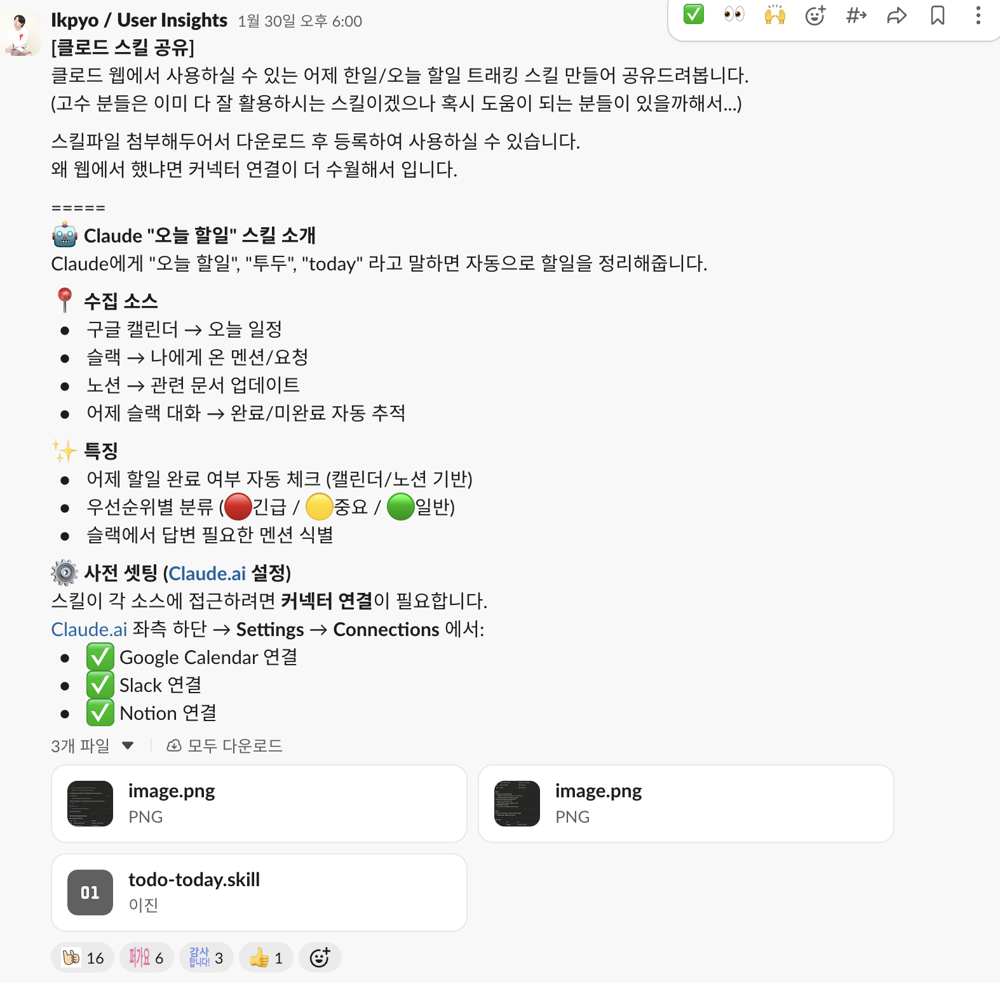

SESSION 01
Design Leadership
YOHAN LEE — 2026
Industry Change
기존에는 역할이 순차적으로 나뉘어 있었지만, AI로 인해 실행 속도가 증가하고 역할 경계가 흐려지고 있습니다.
Process Shift
"The traditional design
process is dead."
Core Problem
그래서 조직은 더 빠르게 실험하고, 더 빠르게 학습해야 합니다.
Problems Found
Problem 01
이 작업들이 문제 해결에 집중하기 어렵게 만들었습니다.
디자이너 시간의 대부분이
반복 작업에 소비
Solution 01 — Localize Automation
디자이너가 수작업으로 텍스트 교체, 레이아웃 조정, QA까지 직접 수행
키값 기반 자동 번역 + 레이아웃 자동 조정 + 자동 QA 검수
Solution 01 — Process
Impact 01
디자이너들이 반복 작업이 아닌 문제 해결에 집중할 수 있게 되었습니다.

String ID Master Plugin 교육 문서
로컬라이즈 규칙, 기술 로직, 플러그인 사용법을 팀 전체에 공유
Leadership Insight
"AI가 우리 직무를 위협한다"는 프레이밍은 팀원을 방어적으로 만듭니다. 대신 "AI로 인해 우리가 할 수 있는 역할이 넓어진다"는 방향으로 대화를 이끌어야 합니다.
"직무의 벽이 무너진다"는 막연한 말 대신, 구체적으로 어떤 역량을 키울 수 있는지 함께 그려주는 것이 리더의 역할입니다.

AI 역량강화 프로젝트 — 각 팀원이 자신의 불편함에서 출발한 AI 활용 프로젝트
Problem 02 — As-Is
기존 디자인 시스템은 Component Library 중심입니다. 하지만 실제 제품은 Component + Pattern + Business Logic의 조합으로 만들어집니다.
Solution 02 — To-Be
팀 목표를 UI 제작에서 AI 기반 Product Generation으로 전환. 역할별로 시스템을 나눠 관리합니다.
Platform Designer가 만든 DS 규칙 위에, Product Designer가 제품 패턴과 실험 결과를 쌓아 올립니다.
Phased Approach
최종 목표 — PO, PD, Dev 누구든 자신이 원하는 기획을 쉽게 구축할 수 있는 프로세스
Solution 02 — Real Case
PRD만 가지고 Figma Make + Claude Code로 80% 아웃풋을 만들어보는 미션을 드렸습니다.

Spec Doc → Figma Make → 어드민 디자인 자동 생성

AI 템플릿을 만들면서 얻은 레슨런 — 시스템 문서화, 패턴 구조화, 피그마 언어 규칙
Problem 03
Solution 03
과업 공유 중심
"이번 주에 A 작업 했습니다"
Lesson Learned 공유 중심

Product Design Tracker & Lessons
프로젝트별 레슨런을 UX 원칙으로 축적 — 트랙, 크리틱 조, 레슨런 모아보기로 분류
Solution 03 — Next Step
Lesson Learned를 넘어, 각자의 업무 스킬을 AI에 저장하고 조직 전체에 공유하는 시스템을 구축합니다.
실제 팀원이 만든 디자인 리뷰 워크플로우 스킬이 슬랙에서 공유되었고, 전사 Claude Plugin에 등록 요청까지 진행 중
이선진/디어 — 페르소나 워크스루 → VOC 조회 → 디자인 리뷰 → 개발 스펙 → 채널 공유까지 한 흐름으로 자동화Solution 03 — Real Cases

디자인 리뷰 워크플로 스킬
이선진/디어 — 페르소나 → VOC → 리뷰 → 스펙 → 크리틱까지 한 흐름으로 자동화

오늘 할일 트래킹 스킬
Ikpyo — 캘린더·슬랙·노션을 연결해 할일을 자동 수집·우선순위 분류
Organizational Impact
Design Execution
화면 제작자
Product Decision
제품 의사결정자
Closing
진짜 어려운 부분은 만드는 것이 아닙니다.
"이 기능에 뭘 넣어야 하냐"를 놓고 의견이 갈리는 순간, 그 판단은 여전히 사람의 몫입니다.
Next
Session 02 — Case Study
UX 리더십을 통한 비즈니스 임팩트 창출
Context
많은 농민들이 정보를 얻기 위해 방문했지만...
콘텐츠 소비는 많지만 실제 행동으로 이어지지 않는다
Data Analysis
→ 비즈니스 확장이 어려운 구조
Key Question
이것은 단순 UX 개선이 아니라 제품 전략 문제였습니다.
Research
"Farmers trust
other farmers"
Strategy
Farming Information App
일방향 정보 제공
Product Flywheel
커뮤니티를 통해 신뢰를 형성하고, 그 신뢰를 거래로 연결하는 자기 강화 구조입니다.
Execution
Leadership
Business Impact
Product Impact
Key Learning
디자인 리더의 역할은 좋은 화면이 아니라
좋은 제품 전략을 실행하는 조직을 만드는 것
YOHAN LEE